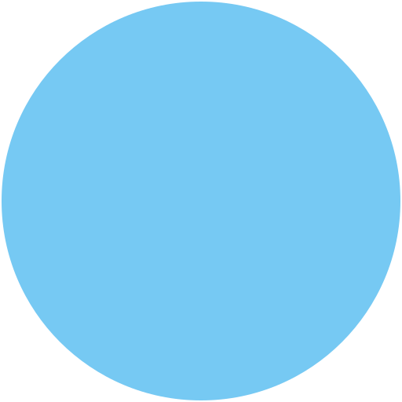

● CHECKING
East BankMain Entrance • 24/7WVLRPLiving Forest • Eastern Time
Live cameras. Real nature. A growing community.
Join us as we explore and share the beauty, wildlife, and everyday life of Almost Heaven.
Real places. Real wildlife. Real life right now at WVLRP
From deer and bears to turkeys, foxes, and more — see who's been stopping by lately.
See the Latest Visitors →To share the natural beauty, wildlife, and everyday life of West Virginia through live cameras, education, and community — inspiring a deeper connection to the outdoors.
About WVLRP →Watch live cameras
Share sightings and stories
Learn about local wildlife
Be part of something real
Help the project grow
